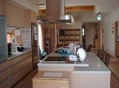
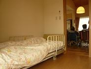

介護を受けたい
居宅介護支援事業所こぶし（ケアプラン）
こぶしの花言葉 「信頼」
看護や介護の経験・知識が豊富な介護支援専門員（ケアマネージャー）が在宅生活をサポートします。
要介護状態（予防含む）になった方やそのご家族と一緒に話し合いながら、住み慣れた場所でその方らしく生活し続けられるようにケアプランを作成していきます。
また、在宅介護やがん療養に関する相談も随時お受けしています。
まずはご連絡ください。
【お問合せ先】
居宅介護支援事業所こぶし
（兵庫県第2872800038号）
兵庫県加古郡稲美町加古5141番地
在宅サービスセンター内
TEL 079(492)8779 FAX 079(492)7102
【居宅介護支援事業所こぶし重要事項説明書】 PDF・2073KB
いなみ訪問看護ステーション
主治医の指示にもとづいて（指示書が必要となります）、専属の理学療法士、作業療法士、訪問看護師がサービスを提供します。
■サービス内容
健康状態の観察 | ・血圧、体温、呼吸、脈拍の測定 |
|---|---|
日常生活の看護 | ・清潔（清拭、洗髪、入浴介助など） |
在宅リハビリテーション | ・理学療法士、作業療法士および看護師が実施 （歩行訓練、トイレや車椅子への移乗訓練） |
介護者の健康や悩み に関する相談 | ・健康チェック |
終末期の看護 | ・終末を家で迎えたいと希望する方への援助 |
■申込方法
・主治医または当ステーションへ申し込む。
・介護支援事業所のケアマネージャーへ申し込む。
（当ステーションに併設しています。）
■営業日
月～金曜日（年末年始を除く） 8:30～17:15
※ただし、緊急の場合はこの限りではありません。
※訪問回数および時間については、利用者との相談で決めさせていただきます。
【お問合せ先】
いなみ訪問看護ステーション
（兵庫県第2862890015号）
兵庫県加古郡稲美町加古5141番地 在宅サービスセンター内
TEL 079(492)7121 FAX 079(492)7102
【いなみ訪問看護ステーション重要事項説明書】 PDF・345KB
訪問介護事業所スマイル１７３（いなみ）
スマイル１７３では、介護保険サービス事業者として、また指定障害福祉サービス事業者として、介護援助の必要な方（主に65歳以上の方および障害のある方）にホームヘルパーを派遣しています。介護を必要とする高齢者および障害のある方の多くは、住み慣れた地域で暮らすことを希望されています。身の回りのお世話や自立の支援など、充実した生活が送れるよう生活支援を行うサービスがホームヘルパーの仕事です。
■サービス内容
・介護保険（兵庫県第2872800129）
身体介護 サービス | ・食事 ・口腔ケア ・排泄 ・衣服の着脱 ・入浴 ・洗髪 ・清拭 ・体位交換 ・起床就寝準備 ・整容 ・外出の送迎 ・通院の介助（要介護度4・5の方） ・見守り など |
|---|---|
生活援助 サービス | ・買物 ・調理 ・衣類の洗濯、補修 ・掃除 ・薬取り ・ベッドメーキング ・相談・助言のサービス ・関係機関との手続き など |
・障害福祉サービス（兵庫県指定2812800023）
居宅介護 | ・身体介護サービス |
|---|
・移動支援サービス（稲美町指定2863801011）
移動支援 | 社会生活上不可欠な外出および余暇活動等の社会参加のための外出をする時における移動介護 |
|---|
・稲美町委託事業
難病患者 ヘルプ サービス | ・身体介護サービス |
|---|---|
寝具洗濯 | ・寝具洗濯：年2回 ※料金についてはお問い合わせください。 |
エンゼル | ・子守、家事援助 |
■営業日
月～金曜日（祝祭日および12/29～1/3を除く） 8:30～17:15
※緊急時は24時間電話対応
■対象地域
稲美町、播磨町、加古川市（八幡町、神野町、野口町、平岡町）
三木市別所町、明石市魚住町、神戸市西区（岩岡町、神出町）
■スタッフ
総勢10名 （介護福祉士 9名／ヘルパー1級 1名）
【訪問介護事業所スマイル１７３（居宅介護・同行援護）重要事項説明書】 PDF・1388KB
【訪問介護事業所スマイル１７３（訪問介護）重要事項説明書】 PDF・1377KB
【訪問介護事業所スマイル１７３（予防訪問介護）重要事項説明書】 PDF・1278KB
【お問合せ先】
訪問介護事業所スマイル１７３（いなみ）
（兵庫県第2812800023号）
兵庫県加古郡稲美町加古5141番地 在宅サービスセンター内
TEL 079(492)0285 FAX 079(492)7102
相談支援事業所
障害をお持ちの方々の自立した地域生活、社会生活への夢・必要な支援についてご希望等をお聞きし、その実現に向けて一緒に考えてまいります。
■対象
町内在住の身体障害者、知的障害者、障害児の方、そのご家族
■営業日
月～金曜日 9:00～17:00（年末年始、祝祭日を除く）
【お問合せ先】
相談支援事業所
（兵庫県第2832810028）
兵庫県加古郡稲美町加古5141番地 在宅サービスセンター内
TEL 070(2289)3620 FAX 079(492)7102
【相談支援事業所重要事項説明書】 PDF・690KB
ひなたんぼ小規模多機能ホーム
「通い」を中心に、ご本人の様態や希望に応じて随時「訪問」や「泊まり」を組み合わせてサービスを提供することで中重度になってもターミナル期でも在宅での生活が継続でき、住み慣れた地域で、その人らしく安心して暮らし続けられるように支援していきます。
また少人数登録制のため、家庭的な雰囲気の中で過ごすことができます。
ご家族の頑張りを支えるために、365日24時間緊急時の対応ができる体制をとっています。


【ひなたんぼ小規模多機能ホーム重要事項説明書】 PDF・1731KB
～「ひなたんぼ」の由来～
稲美町の美しい田園風景。そこには、お日様のあたる暖かい場所。
その暖かさを求めて人が集い、笑顔になるように、と名前が決まりました。
「ひなた」と「たんぼ」を合わせて、「ひなたんぼ」。
ひなたの様に暖かく、家庭的でそこに必ず居場所があり、たんぼのように実りがある。
利用者様、ご家族様、地域の皆様、職員ともに、実りがある、、、
そんなところでありたいと願っています。
■利用対象者について
稲美町在住の方で介護認定を受けている必要があります。
登録人数が25名と制限されているため、要介護の方を優先にしたいと考えています。
■利用料について
介護度によって設定されており、月定額制となっています。
その他、宿泊費、食費などが必要です。詳しくは、下記までご連絡ください。
【お問合せ先】
ひなたんぼ小規模多機能ホーム
（兵庫県第2892800018号）
兵庫県加古郡稲美町加古5141番地 在宅サービスセンター内
TEL 079(492)8184 FAX 079(492)8192